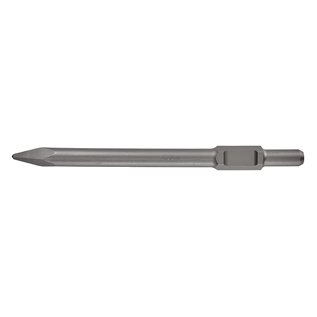
Reference image: Makita · Makita (Referenz). Shows the product type, not the Chinese maker's product.
30 mm hex chisel set for breaker hammers (point, flat and spade chisels, 410 mm)
Point, flat and spade chisels with a 30 mm hex shank for breaker hammers, as a set including the spade chisel that is usually missing in retail.
Specifications
| Shank system (target) | 30 mm hex shank (machine 08-abbruchhammer-15kg: 30 mm hex) |
|---|---|
| Length | 410 mm (reference: Einhell point chisel 410 mm hex at toom) |
| Set contents | Point chisel, flat chisel, spade chisel |
| Material (target) | Alloyed quenched-and-tempered steel, e.g. 40Cr; hardness by certificate |
| Spade width | To be defined; market reference approx. 125 mm (Yato spade chisel, ManoMano) |
| Weight | Approx. 1–1.6 kg per chisel per retailer data (scan stage) |
| Application | Concrete, asphalt, screed, plaster and masonry |
Internal
No manufacturer in the travel-route cities – ask on site (wholesale market, trade fair) or release a maker from the archive.
More
For a single point chisel the HTT listing is USD 4.65–10.98 (approx. EUR 4.17–9.85) against EUR 24.95 gross. A 3-pc set with 30 mm hex and spade chisel was not found in the shops checked (toom, HORNBACH).
- Landed cost
- €14.87
- Selling price (net)
- €17.82
- Margin
- €2.96 · 16.6%
- Target price China
- €11.71
- Saving vs. buying in Germany
- 29.1%
- Minimum order
- 200 pieces per article (point, flat, spade) per the product pages; set packing on request.
- Price basis
- FOB
per unit, net. China prices are list prices (not negotiated). Freight, duty and handling are assumptions; import VAT is deductible as input tax. Assumptions: freight by product group, 3 % handling, selling 15 % below the German market price, target margin 25 %.
Description
The set combines point, flat and spade chisels for breaker hammers with a 30 mm hex holder, as stated in the catalogue for the 15 kg unit.
More
The point chisel breaks up concrete and asphalt, the flat chisel slots and separates, the spade chisel removes screed and plaster over a wide area. What is required is a documented quenched-and-tempered steel, a dimensionally accurate hex shank with a clean locking groove and a traceable hardness test. The shank size must be confirmed per machine before sale; for the 35 kg unit the catalogue only says hex. Labelling and packaging must comply with GPSR and VerpackG.
Customs
| Tariff code | 82079099 |
|---|---|
| Duty rate | 2.7 % |
Standards & marks (Germany/EU)
GPSR (EU) 2023/988General product safety: EU responsible person, traceability and warnings (mandatory for online sales to consumers)REACH (EG) 1907/2006Substance restrictions (Annex XVII) and SVHC information duty for coatings, metals and additivesEN ISO 6508-1Metallic materials – Rockwell hardness test (hardness proof for the chisels)VerpackG / LUCIDPackaging registration (LUCID) and system participation for carton, hang card, film
Internal · notes
E-commerce potential
Breaker hammers usually ship only with a point and a flat chisel (Scheppach AB1600, Zipper at toom); re-buying runs through single chisels: Zipper point chisel with 30 mm hex, 400 mm …
More
EUR 24.95 (hornbach.at, checked 31 Oct 2026), Einhell 410 mm hex (toom), Craftomat (Bauhaus), spade chisel at ManoMano. A 3-pc set with a spade chisel is the gap for an own shop (assessment of the scan stage). Risk: hex shanks are not uniformly standardised, so the return rate rises without a compatibility list per machine. The China price, as the sum of three single listings (point, flat, spade), is about USD 14.52–33.84 per set (maker Zhenjiang HTT, MOQ 200 pieces per article); the comparison basis is a single point chisel, so the margin can only be estimated roughly.
Request from the supplier
- Check the shank dimensions (30 mm hex, locking groove, collar length) on samples against 08-abbruchhammer-15kg and 08-abbruchhammer-35kg; for the 35 kg unit the catalogue only states hex.
- Demand the material certificate (e.g. 40Cr) and a hardness report (HRC per EN ISO 6508-1) for shank and tip.
- Define spade width and set composition (point, flat, spade) and ask for the weight per set for the freight calculation.
- Run a continuous-impact test on at least 10 sample sets in your own breaker hammer before the series order.
- Labelling and packaging: banderole or hard case, EAN, German texts, GPSR details with EU responsible person, VerpackG registration.
Sources
Unit: 1 set of 3 chisels (point, flat, spade). The set price is the sum of the three single listings (FOB per piece: point 4.65–10.98, flat 4.65–10.98, spade 5.22–11.88 USD). The group page does not assign the range to individual lengths or quantities (length 350–600 mm, MOQ 200 pieces). This is not a set quote; a written offer is needed for 410 mm, hardness testing and set packing. Freight, duty and conformity work are not included.
Goes well with
Accessories, consumables and products that sellers sell together with this item.
More products in this category
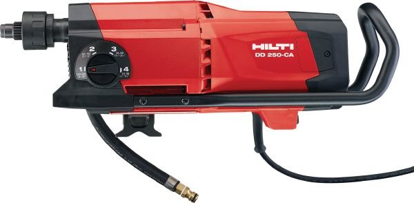
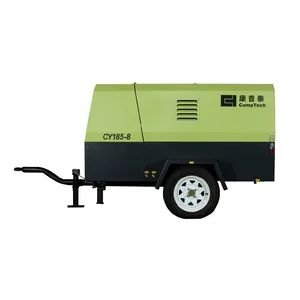
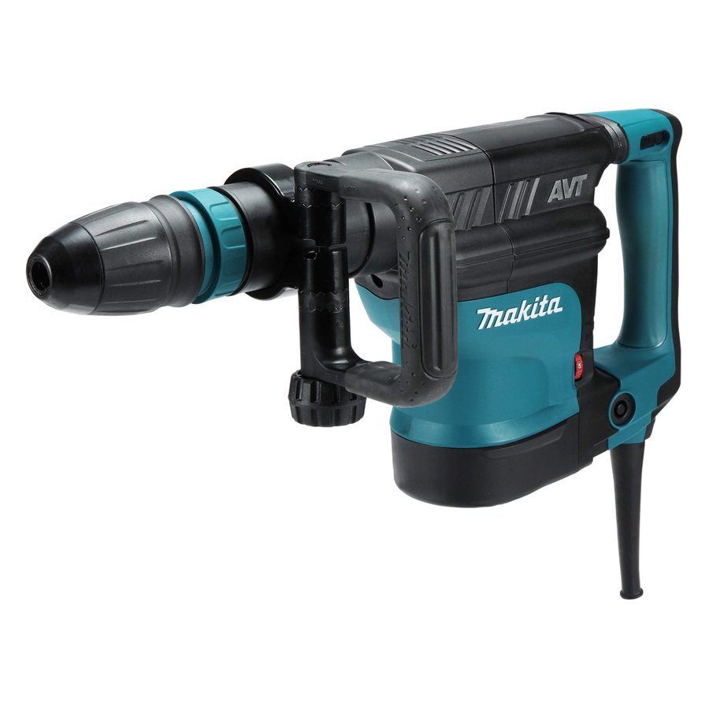
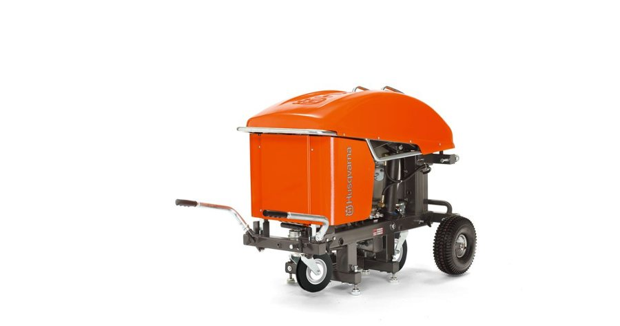
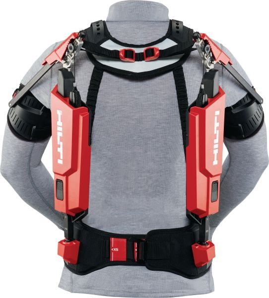
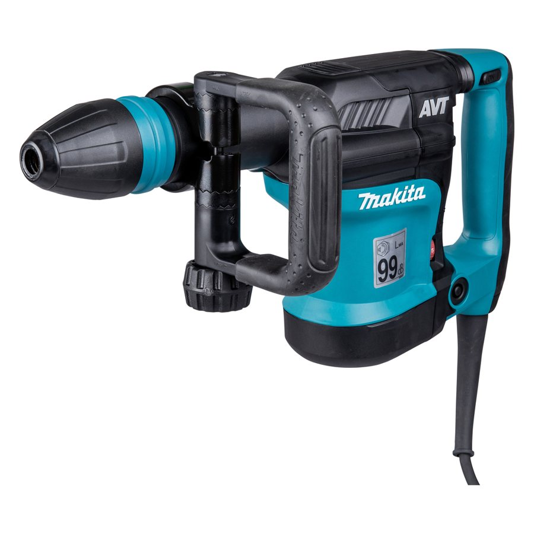
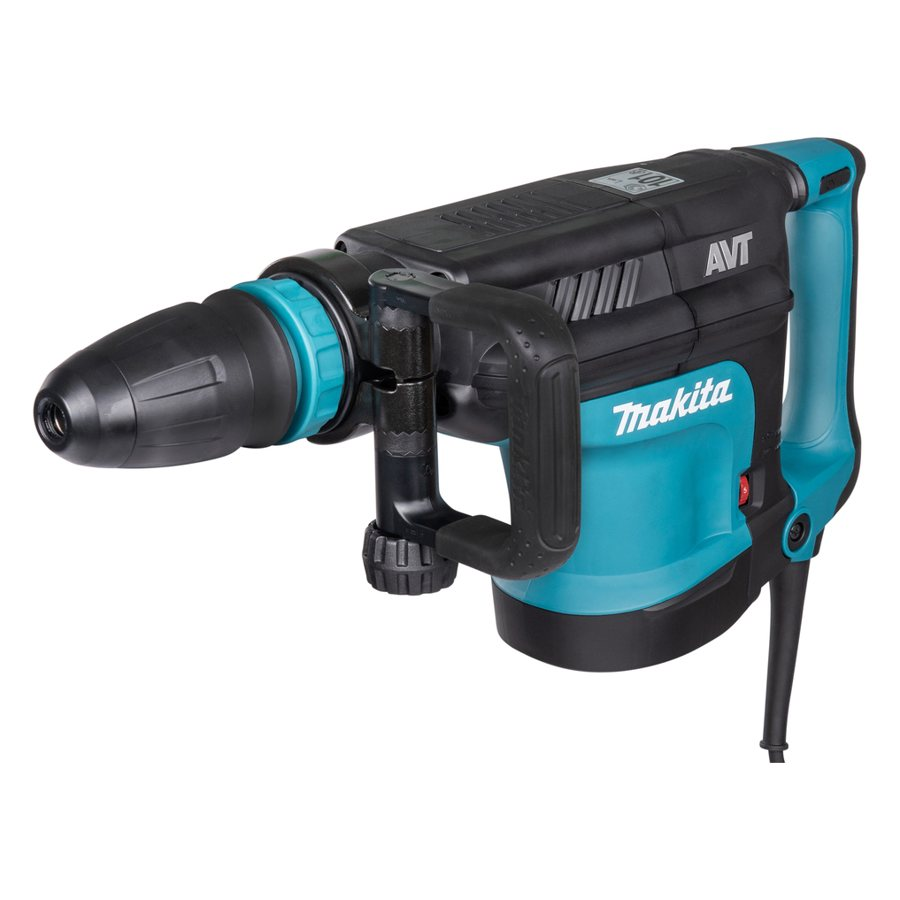
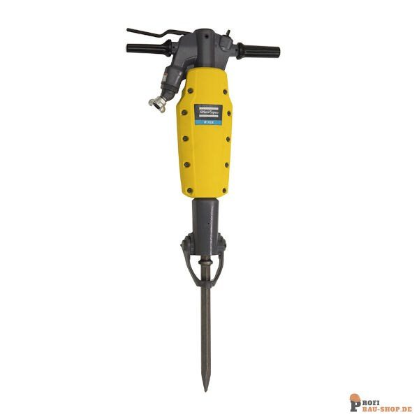
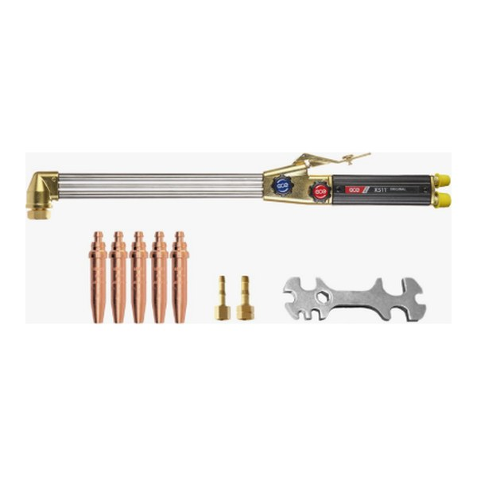
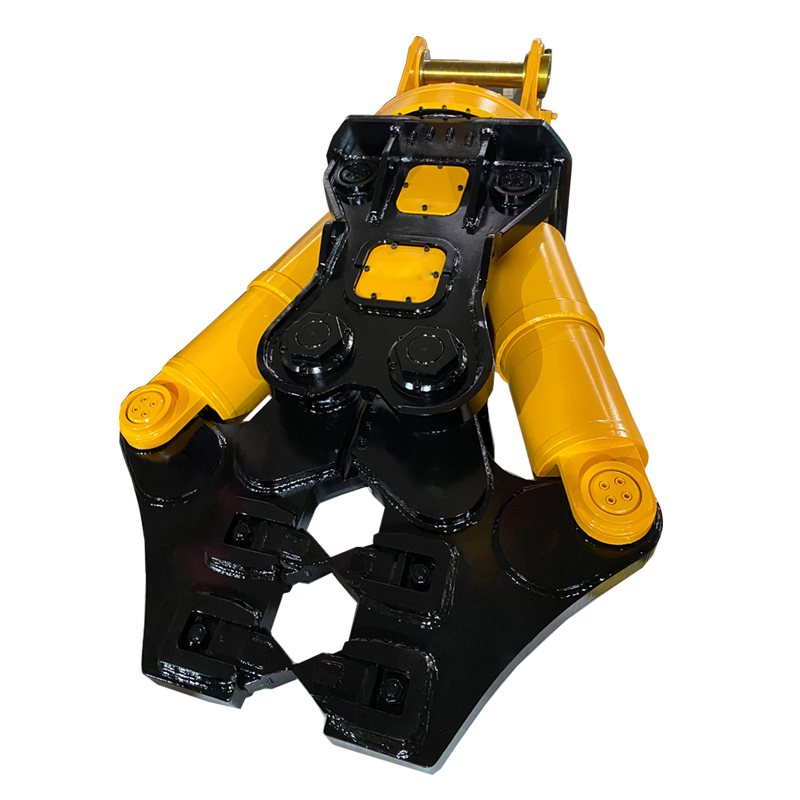
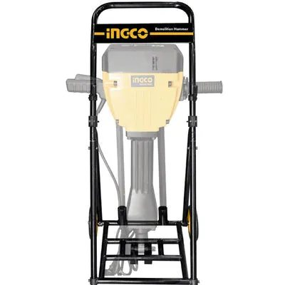
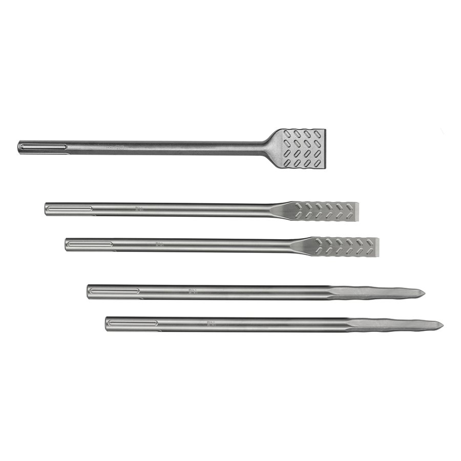
Cross-sell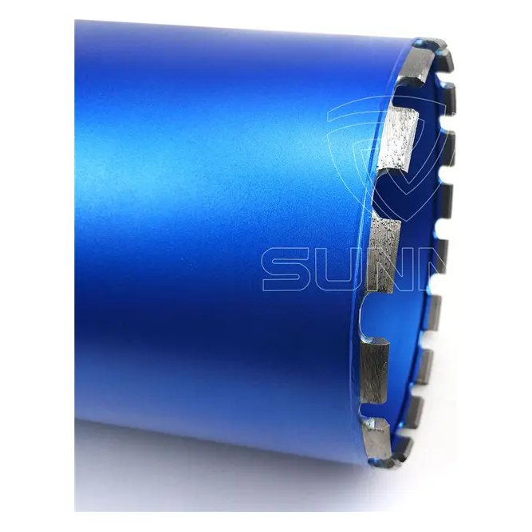
Cross-sell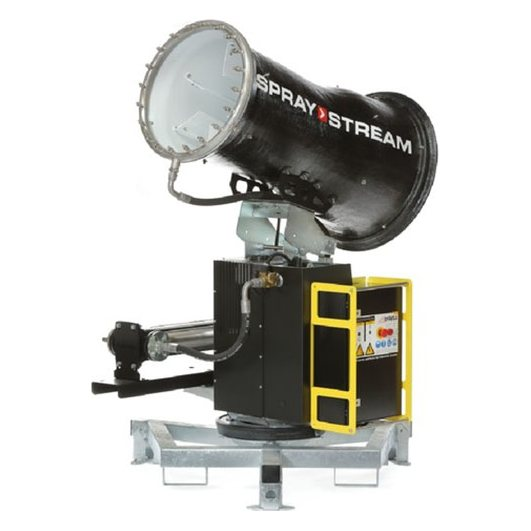
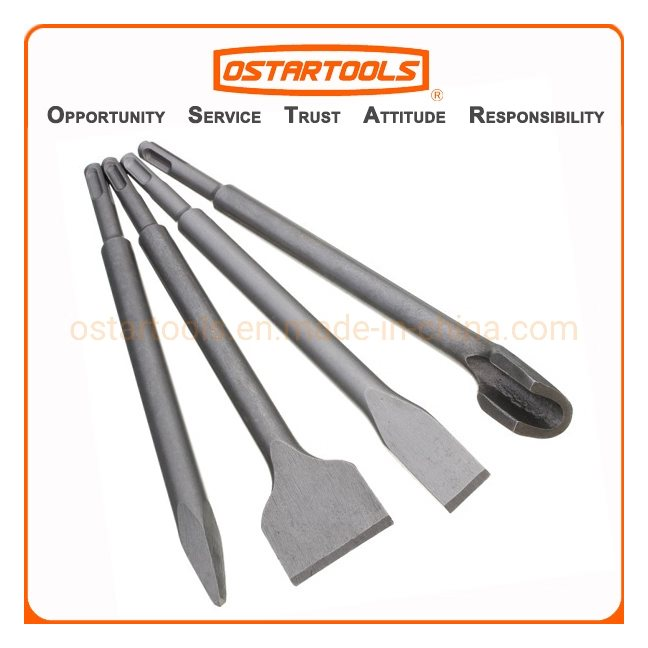
Cross-sell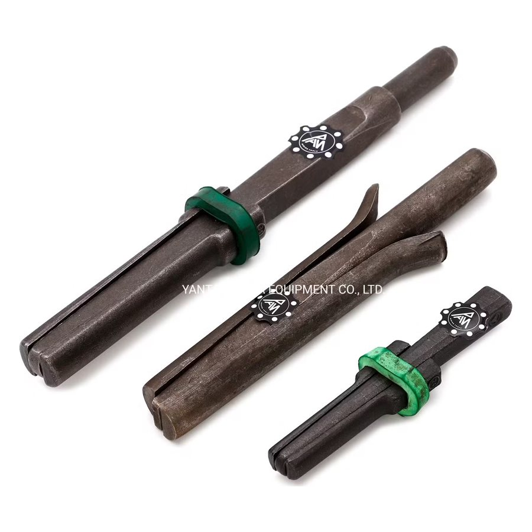
Cross-sell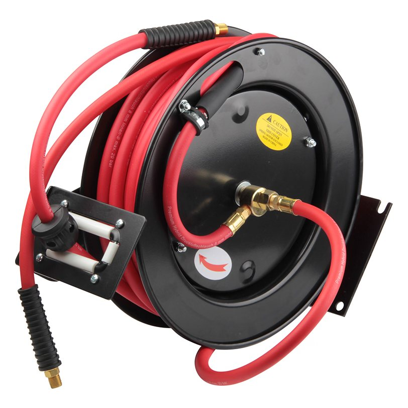
Cross-sell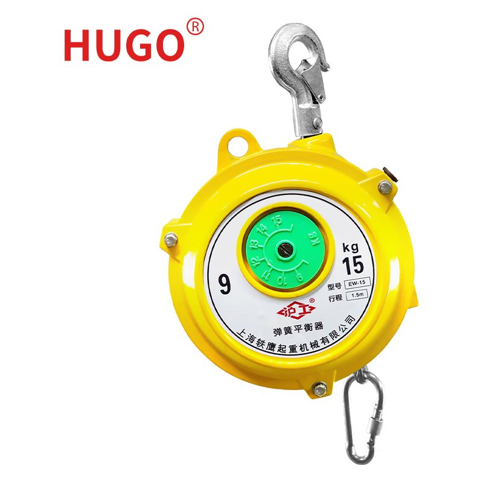
Cross-sell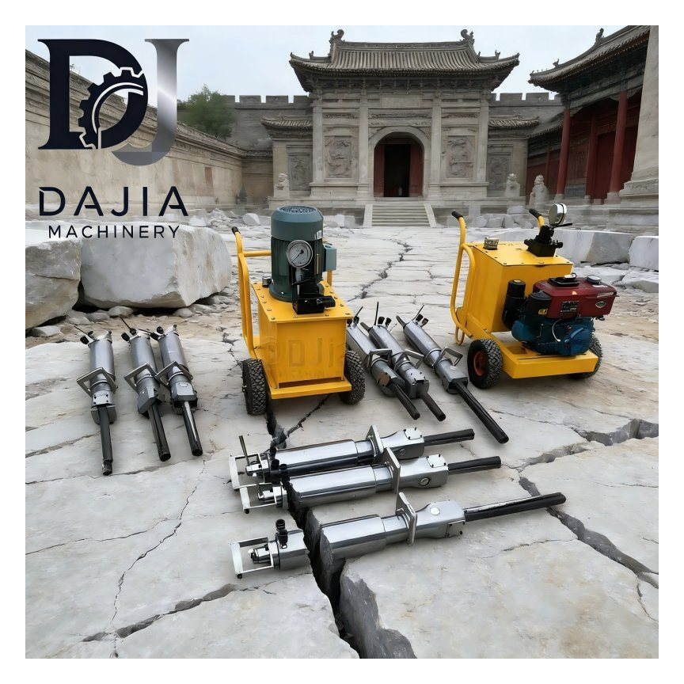
Upsell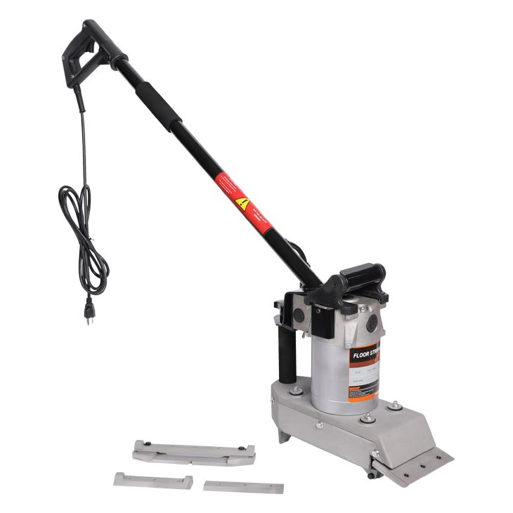
Cross-sell